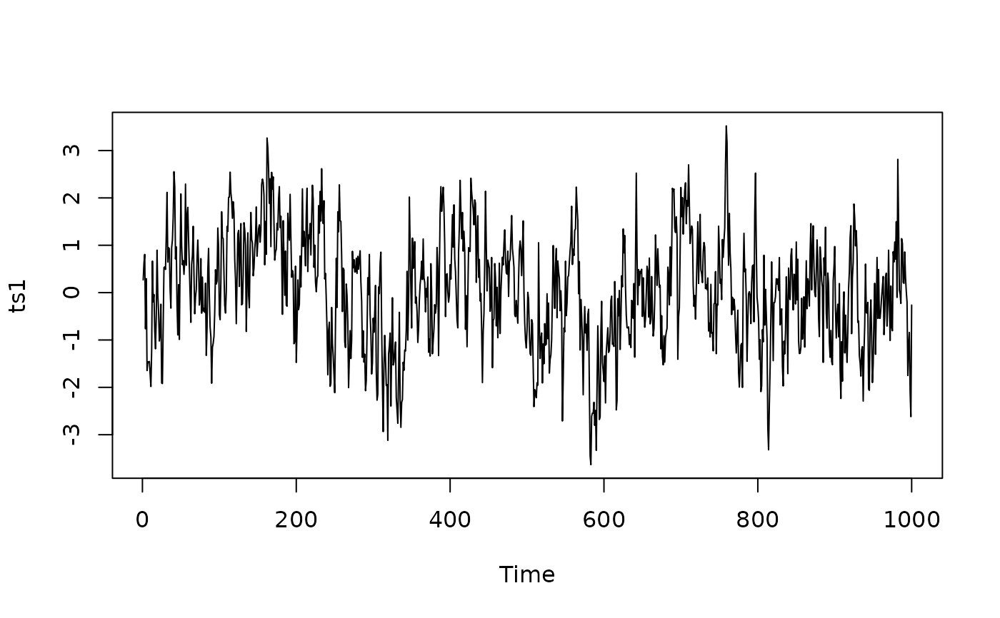
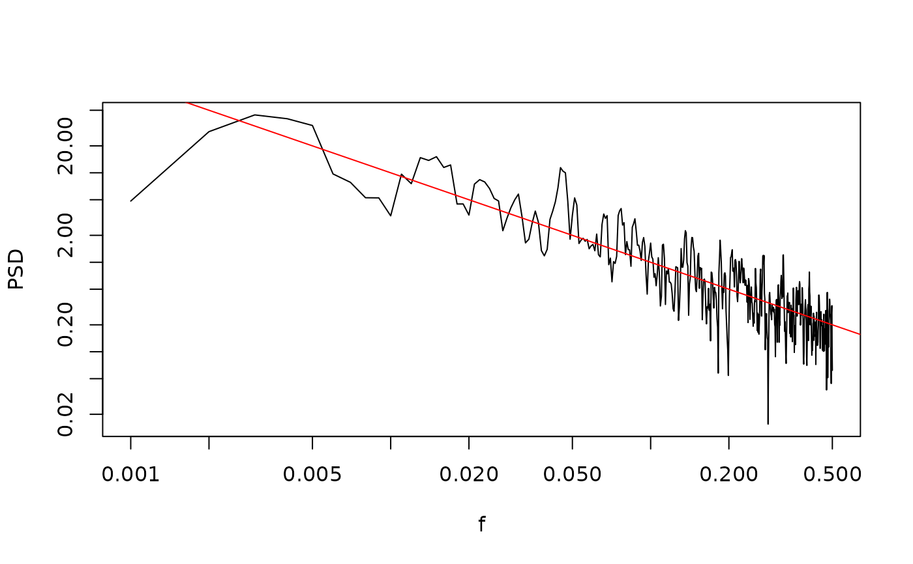
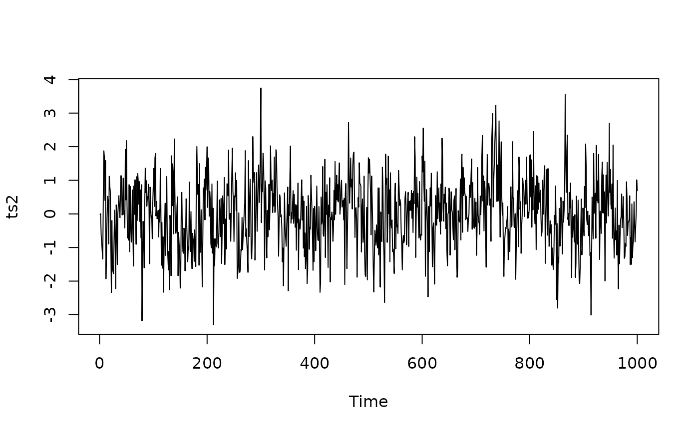
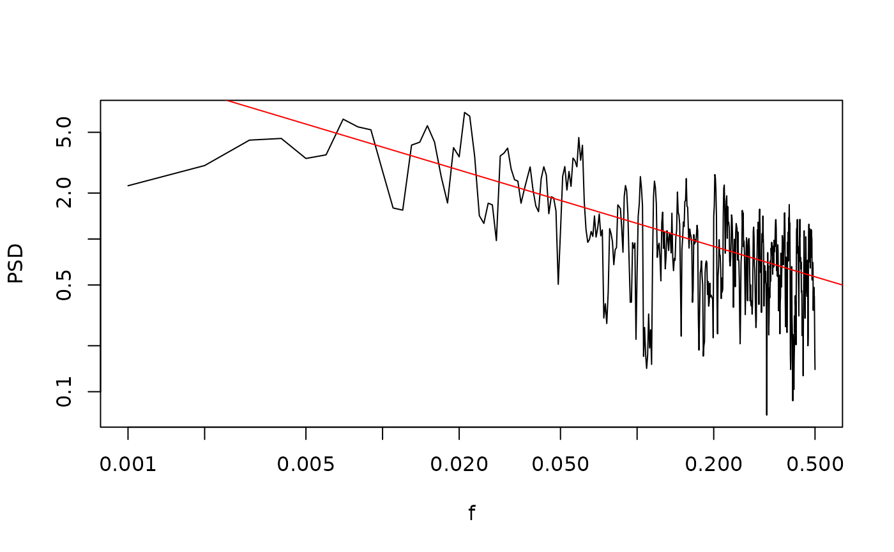
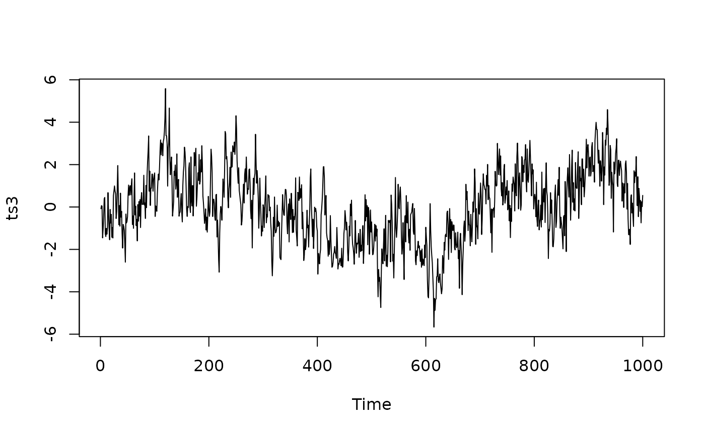

Simulate a random timeseries with a powerlaw spectrum
SimPLS.RdThis function creates a power-law series. It has the problem that it effectively produces (fractional) Brownian bridges, that is, the end is close to the beginning (cyclic signal), rather than true fBm or fGn series.
If alpha>0, then the EXPECTED PSD is equal to alpha*f^(-beta).
If alpha<0, then the timeseries is normalized such that it has EXPECTED variance abs(alpha), and the EXPECTED PSD is proportional to f^(-beta).
Arguments
- N
length of timeseries to be generated
- beta
Slope of the powerlaw. beta = 1 produces timeseries with -1 slope when plotted on log-log power ~ frequency axes
- alpha
the constant. If alpha > 0 this is the parameter alpha * f^(-beta). If alpha < 0, the variance of the returned timeseries is scaled so that its expected value is abs(alpha)
See also
Other functions to generate timeseries with powerlaw like spectra:
SimFromEmpiricalSpec(),
SimPowerlaw(),
SimProxySeries()
Examples
# With a beta = 1 and alpha = 0.1
set.seed(202010312)
ts1 <- ts(SimPLS(N = 1000, beta = 1, alpha = 0.1))
plot(ts1)

sp1 <- SpecMTM(ts1)
LPlot(sp1)
abline(log10(0.1), -1, col = "Red")

# beta = 0.5, alpha = 0.4
ts2 <- ts(SimPLS(1000, beta = 0.5, alpha = 0.4))
plot(ts2)

sp2 <- SpecMTM(ts2)
LPlot(sp2)
abline(log10(0.4), -0.5, col = "Red")

# beta = 1, alpha = -2
ts3 <- ts(SimPLS(1000, 1, alpha = -2))
plot(ts3)

var(ts3)
#> [1] 2.869695
# the EXPECTED variance is -2, for a given random timeseries the actual value will differ
rep.var <- replicate(100, {
var(SimPLS(1000, 1, -2))
})
hist(rep.var)
abline(v = 2, col = "Red")
mean(rep.var)
#> [1] 2.01647